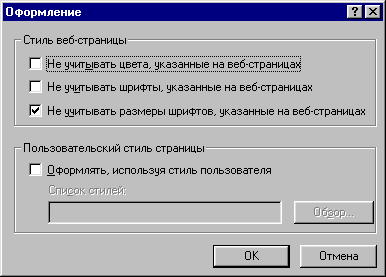

| Общие требования к веб-сайту. | Оглавление | Фиксированный или масштабируемый веб-сайт? |
Шрифты и цвет
Вопрос шрифтов и цветовой гаммы является одним из самых важных и значимых при разработке
веб-сайтов. Хотя это предельно простые вещи, однако, чуть ли не на каждом втором
веб-сайте используются нездоровые сочетания цветов, реже используются нечитаемые шрифты.
Использование нестандартных шрифтов крайне нежелательно. Наиболее подходящим
и распространенным шрифтом для веб-страниц является Arial. Ни в коем случае
не фиксируйте размер шрифта средствами CSS. В броузере Netscape можно намертво
зафиксировать размер шрифта. В настройках броузера мне не удалось
найти опцию, указывающую броузеру не учитывать размер шрифта.
Но если шрифт не зафиксирован, то Неткейп позволяет его увеличивать и уменьшать
почти до любых размеров. В этом отношении Netscape ведет себя гораздо правильнее. Он
увеличивает размер шрифта до любого необходимого, т.е. до тех пор, пока пользователю
не станет удобно. В MS Internet Explorer по умолчанию размер шрифта
не изменяется, если в файле стилей веб-сайта он зафиксирован. Для того чтобы
игнорировать фиксированные шрифты и иметь возможность их увеличивать или уменьшать
зайдите в меню Сервис->Свойства обозревателя->Офрмление и поставте галочку "Не учитывать
размеры шрифтов, указанные на веб-страницах".

MS Internet Explorer имеет только пять градаций на размер шрифта, а фактически только две.
По умолчанию, стоит средний. И для того чтобы увеличить шрифт, вы можете выбрать либо "Крупный", либо
"Самый крупный". Но иногда, даже самый крупный не спасает. У меня монитор находится на
расстоянии 70-80 сантиметров от глаз. Ходить по интернету я люблю, откинувшись в кресле.
Сайты, которые имеют зафиксированный или уменьшенный шрифт, меня напрягают и мне не нравятся.
А есть еще люди с расстройством зрения, о них тоже необходимо думать.
Есть мониторы с высоким разрешением экрана 1600х1200.
Но почему-то до сих пор
встречается очень много сайтов, которые фиксируют маленький шрифт. Мотивация
людей, которые фиксируют размер шрифта не поддается здравой логике. Они решают
за пользователя, что хорошо, а что плохо. Всегда тестируйте сайт на различных
разрешениях экрана и размерах шрифтов.
В свете рассмотренной выше проблемы, необходимо рассмотреть графические меню.
Меню сделанное в графике имеет один плюс - одинаково выглядит
во всех броузерах и иногда выглядит красивее. Слово иногда специально
выделенно жирным, т.к. очень часто встречаются такие графические меню, что
непонятно зачем человек напрягался, когда оно выглядит значительно хуже
текстового. Ну, а красота так вообще понятие субъективное.
Меню сделанное в графике имеет также один минус - оно не масштабируется.
И на экране 640х480 и на 1600х1200 оно будет состоять из одинакового
количества пикселов, а фактические видимые размеры будут разными.
У пользователя с разрешением 640х480 меню может не поместиться на экране.
Напротив, пользователь с разрешением 1600х1200 вынужден будет бежать за
лупой или уменьшать разрешение экрана. Текстовое меню пользователь может
уменьшить и увеличить.
Теперь давайте рассмотрим вопрос с цветами. Каких только серобурмалиновых
цветов сейчас не насмотришься в Интернет, чем думали дизайнеры или веб-мастера непонятно. Возможно, они
зачастую хотят продемонстрировать миру или своему начальнику познания в области HTML, при этом,
им совершенно нет дела до пользователей, которым приходится читать зеленый текст на черном
фоне. Мне даже как-то попался желтый текст на белом фоне. ;-))
Единственным приемлемым сочетанием для текстовых блоков является черное на белом!
Все остальное есть плод больной фантазии. Другие сочетания можно допускать только в заголовках или
названиях меню. В этом случае, другие сочетания будут оправданы, т.к. они служат для
выделения заголовка или меню. Недавно мне на глаза попался журнал "Хакер", как его люди
читают мне просто непонятно, белый текст на черном, зеленом или каком-либо другом фоне.
Если вы решили использовать нестандартное сочетание цветов, то обратитесь к следующему
рисунку, чтобы подобрать цвета текста и фона, которые не вызовут больших затруднений у пользователя.